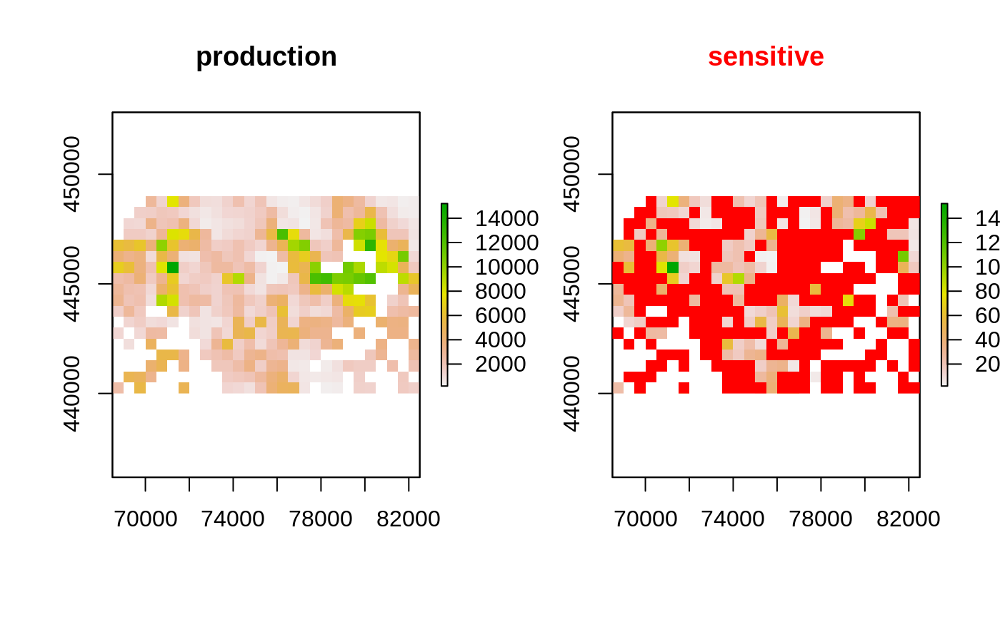
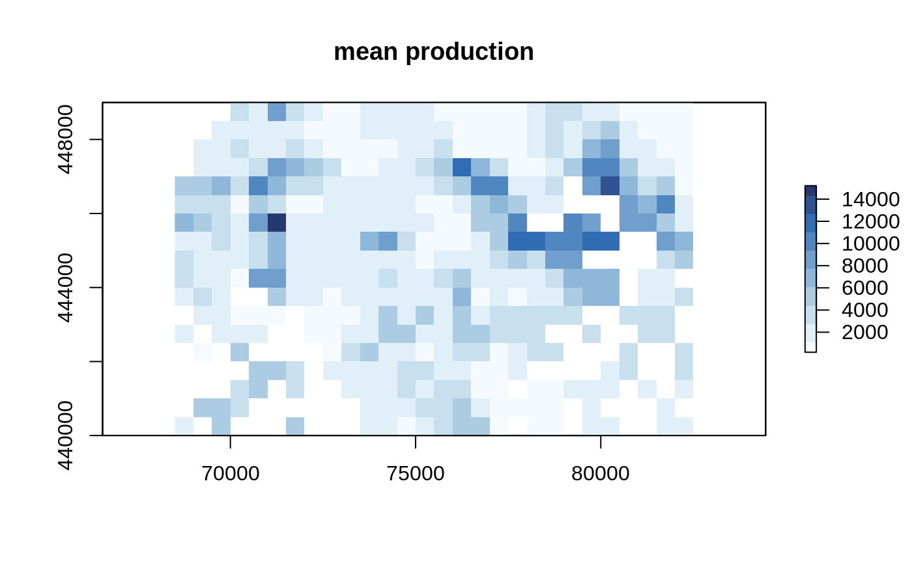
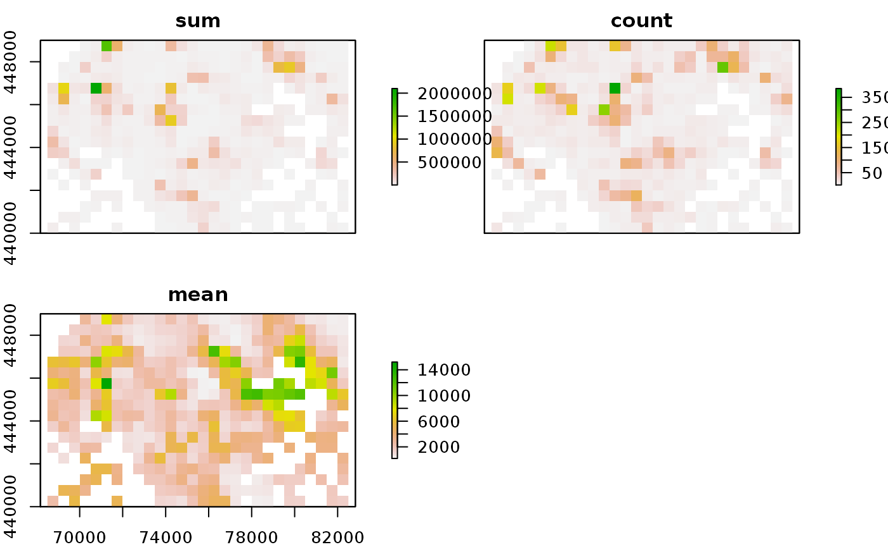
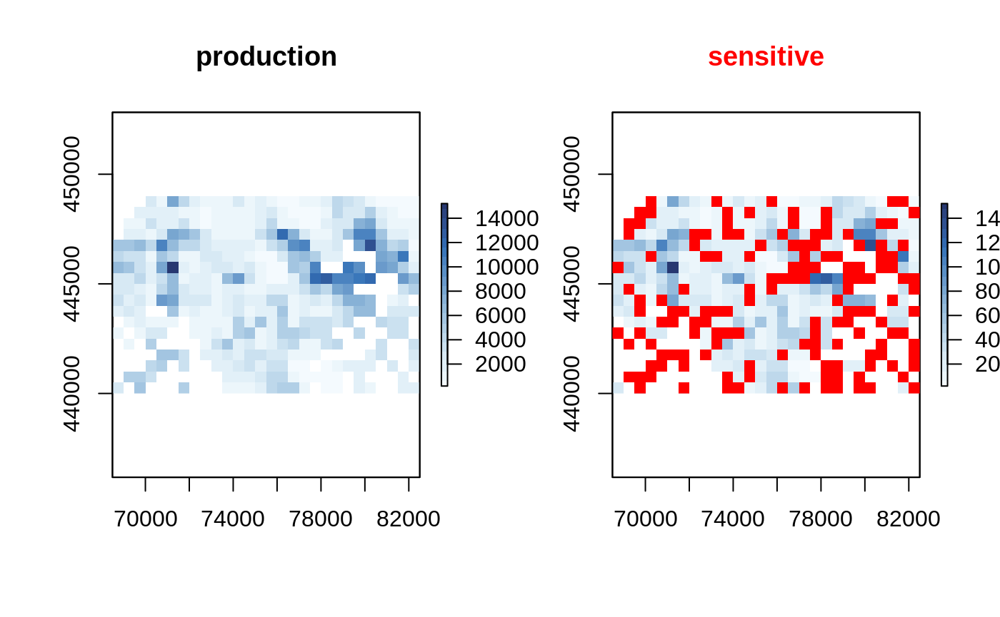
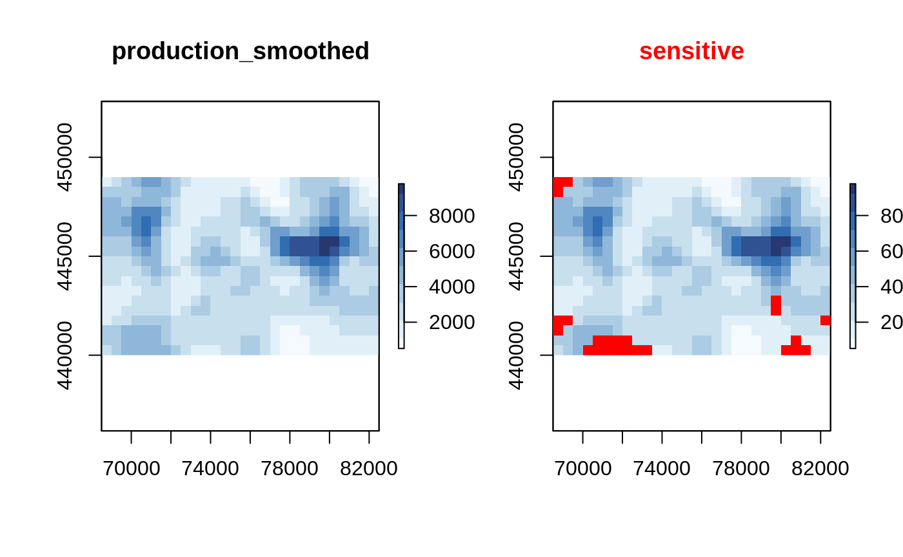
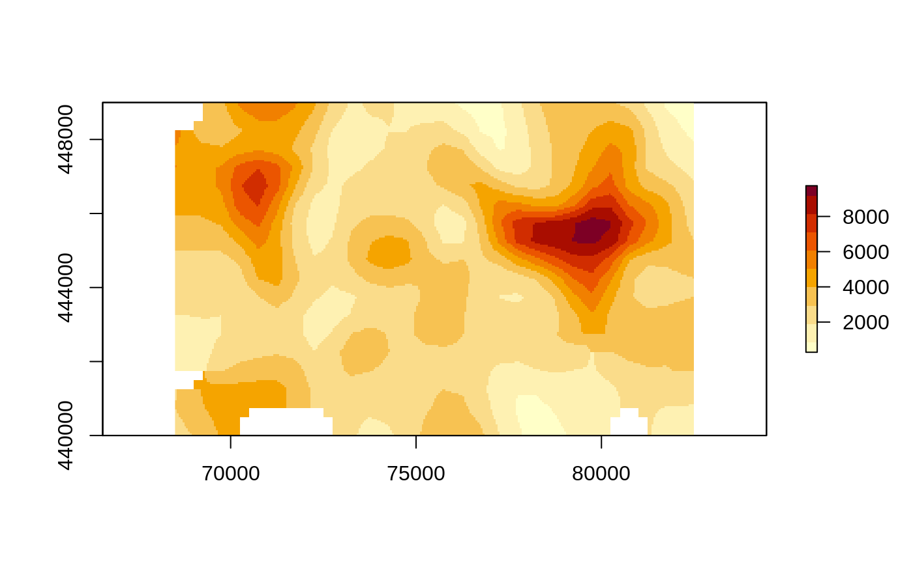
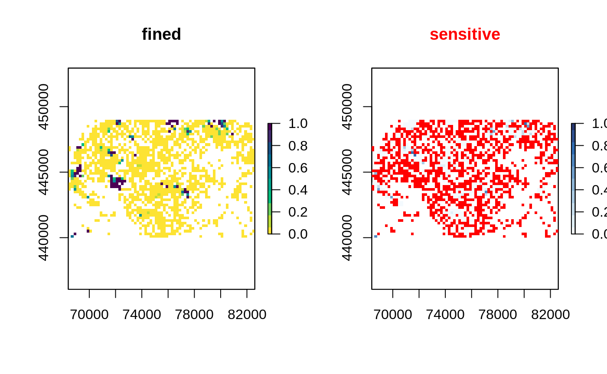
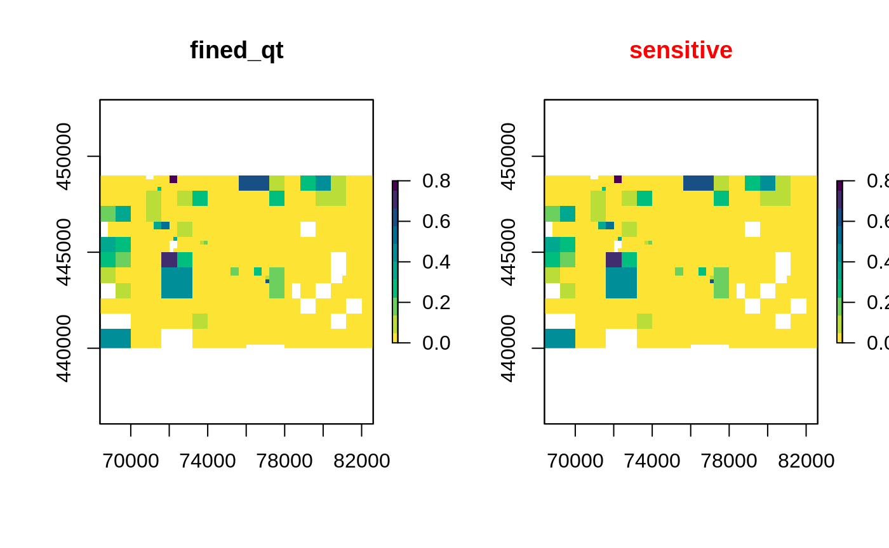
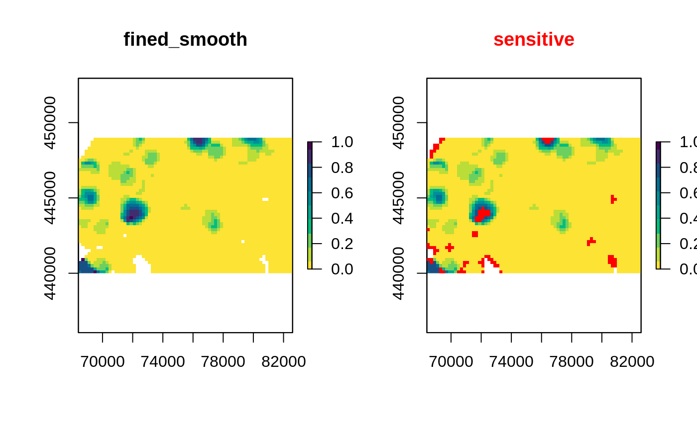

vignettes/privacy_protecting_maps.Rmd
privacy_protecting_maps.RmdPlotting data on a map is a popular and helpful tool to analyze spatial data. R makes it easy to plot spatial data using packages such as ggplot2, tmap, mapview or leaflet. However when plotting the spatial distribution of a sensitive variable, you may accidentally reveal a sensitive value of an individual observation, e.g. the income of a person. The procedure of adjusting output data to protect individual observations is called statistical disclosure control and several open source tools are available, including \(\tau\)-Argus and R packages sdcTable and sdcMicro. Most SDC software operates on values of records, mostly ignoring spatial properties (if any) of data.
sdcSpatial contains functions to create spatial distribution maps, assess the risk of disclosure in locations on the map and to suppress or adjust locations with revealing sensitive values.
sdcSpatial contains two simulated datasets with realistic locations: dwellings and enterprises. Lets have a look at the dataset enterprises.
data("enterprises")
head(enterprises)
#> Loading required package: sp
#> coordinates production fined
#> 1 (80782, 448985) 408.8129 FALSE
#> 2 (81007, 448947) 587.0074 FALSE
#> 3 (81042, 448875) 566.2759 FALSE
#> 4 (81003, 448940) 581.8662 FALSE
#> 5 (80886, 448804) 854.1555 FALSE
#> 6 (80986, 448934) 624.2627 FALSEenterprises is a SpatialPointsDataFrame object, but sdc_raster works equally well with sf and data.frame objects with point data (locations).
summary(enterprises)
#> Object of class SpatialPointsDataFrame
#> Coordinates:
#> min max
#> x 68507 82498
#> y 440024 448999
#> Is projected: TRUE
#> proj4string :
#> [+init=epsg:28992 +proj=sterea +lat_0=52.15616055555555
#> +lon_0=5.38763888888889 +k=0.9999079 +x_0=155000 +y_0=463000
#> +ellps=bessel
#> +towgs84=565.2369,50.0087,465.658,-0.406857,0.350733,-1.87035,4.0812
#> +units=m +no_defs]
#> Number of points: 8348
#> Data attributes:
#> production fined
#> Min. : 59.46 Mode :logical
#> 1st Qu.: 1019.98 FALSE:7931
#> Median : 1954.32 TRUE :417
#> Mean : 3249.59
#> 3rd Qu.: 3901.44
#> Max. :114467.56enterprises contains two simulated variables: production (numeric) and fined (logical), and we are interested in their spatial distribution. Let’s first plot the locations of enterprises:
 There are many locations and a lot of over-plotting or occlusion is taking place: a better visualization method to reveal spatial patterns in this case is to create a raster or density plot. Since we are interested in the spatial distribution of production we would like to rasterize the data, which can be done with raster::rasterize or ggplot2::geom_tile but for didactic sake we use sdc_raster to create a raster map with a 500m grid.
production <- sdc_raster(enterprises, "production", r = 500)
plot(production, value="mean", sensitive=FALSE, main="mean production") We have plotted the mean production, other stats are kept in the production$value object:

print(production)
#> numeric sdc_raster object:
#> resolution: 500 500 , max_risk: 0.95 , min_count: 10
#> mean sensitivity score [0,1]: 0.6432039Printing the production object shows that when we demand that a raster cell should at least have 10 observations (min_count) and its maximum value should not comprise 95% (max_risk) of its total value, then 64% of the data in the map is sensitive!
For enterprise data a threshold of 10 may be on the high side, so let us change that into 5:
production$min_count <- 5
production$max_risk <- 0.9
# or equally
production <- sdc_raster(enterprises, "production", r = 500, min_count = 5)
sensitivity_score(production)
#> [1] 0.3567961The score dropped, but which cells are we talking about?

sensitive_cells is a raster which can be used for further inspection.
Let us try to reduce the sensitivity of the map using a smoothing method:
 In this case smoothing reduced the number of sensitive locations drastically! Let us remove the remaining sensitive cells
production_safe <- remove_sensitive(production_smoothed)
sensitivity_score(production_safe) # check, double check
#> [1] 0We can improve upon the “blocky” map by using raster::disaggregate. We can plot the following:
mean_production <- mean(production_safe)
mean_production <- raster::disaggregate(mean_production, 10, "bilinear")
# generated with R >= 3.6
# col <- hcl.colors(10, "YlOrRd", rev = TRUE)
col <- c("#FFFFC8", "#FEF1B2", "#FADC8A", "#F7C252", "#F5A400", "#F18000", "#EB5500", "#D12D00", "#A90D00", "#7D0025")
raster::plot(mean_production, col=col)
protect_quadtree is also a protecting method, which we demonstrate with the variable fined.
First we create a more fine grained (punned not intended) raster for the variable fined.
fined <- sdc_raster(enterprises, "fined", min_count = 5, r = 200, max_risk = 0.8)
print(fined)
#> logical sdc_raster object:
#> resolution: 200 200 , max_risk: 0.8 , min_count: 5
#> mean sensitivity score [0,1]: 0.7802503Which is rather sensitive, let us have a look at the locations:
# col <- hcl.colors(10, rev=TRUE) # generated with R >= 3.6
col <- c("#FDE333", "#BBDD38", "#6CD05E", "#00BE7D", "#00A890"
, "#008E98", "#007094", "#185086", "#422C70", "#4B0055")
plot(fined, "mean", col=col)
The quadtree method aggregates sensitive cells with its 3 neighbors and does this recursively: the result is as follows:
 which has a sensitivity score of 0.
The method has the advantage of locally selecting the necessary resolution to suppress sensitive values, while the protect_smooth method uses a fixed bandwidth.
The result is blocky in comparison with the smoothing method, but safer if you look at the sensitive cells in high fined areas.

raster
sdcSpatial builds heavily upon the excellent raster package: it creates raster maps and uses the machinery of raster to calculate sensitivity and to apply protection methods to raster maps.